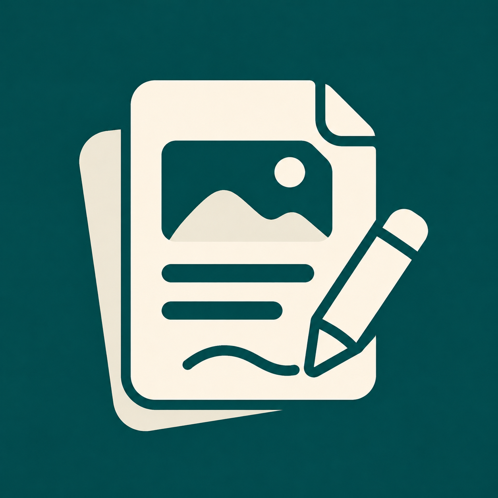

稿有样 Draftory
写好内容，剩下交给稿有样
稿有样 Pro
小红书图文卡片
↗
YOUR WRITING WORKSPACE
✳
让文字，
好好呈现。
在这里写作、排版，然后把灵感带到公众号。
✦
写下想法
剩下的交给排版
公众号主题
默认 · 青绿
简约 · 黑白
文艺 · 暖棕
0
字
约
0
分钟阅读
◎ 违规词自查
🔒 高级自查
复制富文本
↗
稿有样 Pro 已激活
取消激活
自定义词库（每行一个词）
自动保存于当前浏览器
Markdown 编辑
在此输入你的内容
自动保存
点击「违规词自查」检查内容
效果预览
公众号排版效果
实时预览
稿有样 Pro
×
解锁扩展词库高级自查与自定义词库。
输入激活码
激活
取消激活